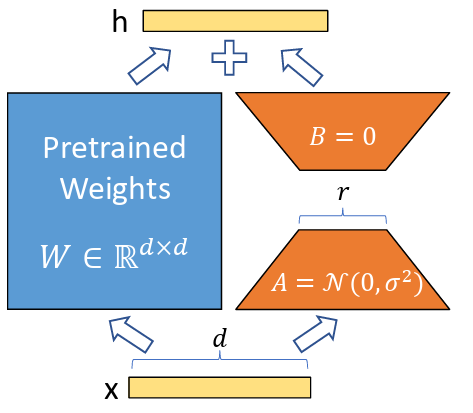
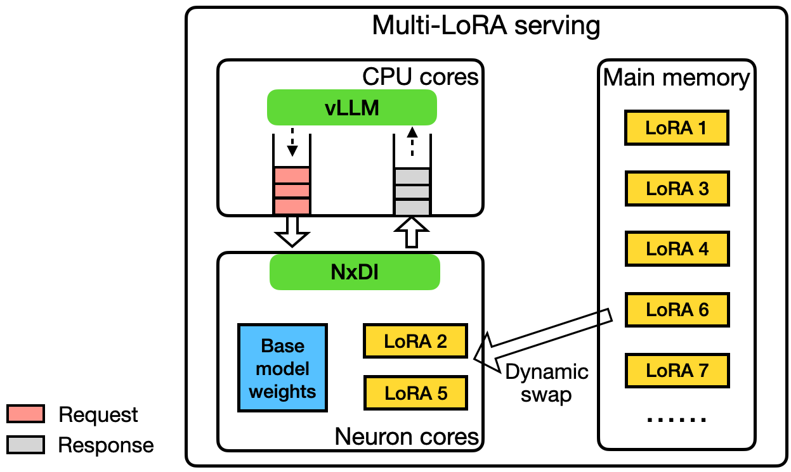

Multi-LoRA Serving #
As organizations deploy LLMs across diverse use cases—from customer support chatbots to code generation assistants to domain-specific document analysis—the need for specialized, fine-tuned models has grown dramatically. However, deploying separate full models for each task or customer is prohibitively expensive, both in terms of memory footprint and infrastructure costs. Multi-LoRA serving addresses this challenge by enabling a single base model to serve hundreds or thousands of specialized variants through lightweight adapter weights.
Low-Rank Adaptation (LoRA) [1] is a parameter-efficient fine-tuning technique that adapts large language models for specific tasks by introducing trainable adapter matrices that are orders of magnitude smaller than the base model. Multi-LoRA serving extends this concept to production systems, allowing multiple LoRA adapters to share a single base model instance, dramatically reducing memory requirements and enabling cost-effective deployment of personalized or task-specific models at scale.
In this section, we examine how LoRA works mathematically, how multi-LoRA serving systems manage adapter memory and computation, and the tradeoffs between different serving strategies.
What is LoRA? #
Low-Rank Adaptation (LoRA) [1] is a parameter-efficient fine-tuning (PEFT) technique that adapts large language models for specific tasks without modifying the original model weights. Instead of fine-tuning all model parameters—which requires storing and updating billions of parameters—LoRA freezes the base model and injects small, trainable adapter matrices into each transformer layer.
The key insight behind LoRA is that model adaptations often have low intrinsic dimensionality: the task-specific changes needed to adapt a model lie in a much smaller subspace than the full parameter space. Research has demonstrated that most adaptation information can be captured with ranks as low as 1-8 for many tasks, enabling dramatic parameter reduction.
Mathematical Formulation #
Consider a weight matrix $W \in \mathbb{R}^{d \times k}$ in a transformer layer (e.g., attention projection or MLP layer). During full fine-tuning, we would learn an update $\Delta W \in \mathbb{R}^{d \times k}$ and compute the adapted weights as $W + \Delta W$.
LoRA decomposes this update into a low-rank product. Instead of learning $\Delta W$ directly, LoRA learns two smaller matrices:
- $A \in \mathbb{R}^{d \times r}$ (down-projection matrix)
- $B \in \mathbb{R}^{r \times k}$ (up-projection matrix)
where the rank $r \ll \min(d, k)$ (typically $r \in {8, 16, 32, 64}$). The weight update is then:
$$\Delta W = AB \in \mathbb{R}^{d \times k}$$
During inference, the adapted weights are computed as:
$$W_{\text{adapted}} = W + \alpha \cdot AB$$
where $\alpha$ is a scaling factor (typically $\alpha = \frac{1}{r}$ or a learned hyperparameter) that controls the strength of the adaptation.
Parameter Efficiency #
The parameter reduction is dramatic. For a weight matrix with dimensions $d \times k = 4096 \times 4096$:
- Full fine-tuning: Requires updating all $16,777,216$ parameters
- LoRA with rank $r=16$: Requires only $2 \times (4096 \times 16) = 131,072$ parameters
This represents a 128× reduction in trainable parameters. Across an entire transformer model, LoRA adapters typically comprise less than 1% of the base model size, while often achieving comparable or superior performance to full fine-tuning.

LoRA decomposes the weight matrix update into two smaller matrices, A and B, where the rank r is much smaller than the original dimensions.
LoRA Computation During Inference #
During inference, LoRA adapters can be applied in two ways:
1. Separate Computation (Runtime Merging) #
Compute the base model output and LoRA contribution separately, then combine:
$$y = Wx + \alpha \cdot (AB)x = Wx + \alpha \cdot A(Bx)$$
This approach:
- Keeps base weights frozen: $W$ remains unchanged, enabling sharing across adapters
- Enables dynamic adapter swapping: Different $AB$ pairs can be loaded for different requests
- Adds computational overhead: Requires an extra matrix multiplication $(Bx)$ and addition per layer
The computational cost per layer is:
- Base computation: $O(dk)$ for $Wx$
- LoRA computation: $O(dr + rk) = O(r(d+k))$ for $A(Bx)$
- Total: $O(dk + r(d+k))$
For $r \ll \min(d,k)$, the LoRA overhead is small relative to the base computation.
2. Pre-merged Weights (Offline Merging) #
Pre-compute $W_{\text{merged}} = W + \alpha \cdot AB$ offline and use the merged weights directly:
$$y = W_{\text{merged}}x$$
This approach:
- Eliminates runtime overhead: No extra computation during inference
- Requires separate base model per adapter: Cannot share base weights across adapters
- Increases memory footprint: Each merged model requires full parameter storage
Pre-merged weights are useful for static deployments where adapters don’t change, but they eliminate the memory benefits of multi-LoRA serving.
Multi-LoRA Serving: The Challenge #
Multi-LoRA serving enables a single base model instance to serve multiple specialized variants by dynamically loading different LoRA adapters. This creates a fundamental memory management challenge:
Base model weights (shared): ~10-100 GB in device memory
LoRA adapters (per variant): ~10-100 MB each
Goal: Serve 100+ variants on a single device
The base model weights are loaded once and shared across all adapters. However, device memory (HBM) capacity is limited—typically 40-80 GB per GPU—and cannot simultaneously host hundreds of adapters. This necessitates a memory hierarchy where:
- Base model: Resides permanently in device memory (HBM)
- Active adapters: Currently serving requests, loaded in HBM
- Inactive adapters: Stored in CPU memory or secondary storage, loaded on-demand

Multi-LoRA serving architecture: base model weights are shared in HBM, while adapters are dynamically loaded from CPU memory based on request patterns.
Static vs. Dynamic Multi-LoRA Serving #
Multi-LoRA serving systems employ two primary strategies for managing adapter memory:
Static LoRA Serving #
All LoRA adapters are preloaded into device memory before serving begins. The base model and all adapters occupy HBM simultaneously.
Characteristics:
- Fixed adapter set: All adapters must be known at deployment time
- Memory-limited scalability: Number of adapters is bounded by available HBM capacity
- Zero swapping overhead: No latency penalty for adapter loading
- Simple implementation: No dynamic memory management required
When to use:
- Small, fixed set of adapters (e.g., 5-10 specialized models)
- Predictable workload with known adapter distribution
- Latency-critical applications where swapping overhead is unacceptable
Memory constraint: For a base model requiring $M_{\text{base}}$ GB and adapters requiring $M_{\text{adapter}}$ GB each, the maximum number of static adapters is:
$$N_{\text{static}} = \left\lfloor \frac{M_{\text{HBM}} - M_{\text{base}}}{M_{\text{adapter}}} \right\rfloor$$
For example, with 80 GB HBM, a 40 GB base model, and 50 MB adapters: $N_{\text{static}} \approx 800$ adapters. However, in practice, KV cache and other system overheads reduce this significantly.
Dynamic LoRA Serving #
Adapters are loaded and unloaded on-demand based on incoming requests. Only active adapters (currently serving requests) reside in device memory, while inactive adapters are stored in CPU memory or secondary storage.
Characteristics:
- Unlimited adapter capacity: Can support hundreds or thousands of adapters
- Dynamic workload adaptation: Adapters can be added/updated without redeploying the base model
- Swapping overhead: Loading adapters from CPU to HBM incurs latency (typically 10-100 ms per adapter)
- Complex memory management: Requires LRU caching, prefetching, and eviction policies
When to use:
- Large, dynamic set of adapters (e.g., per-customer or per-task models)
- Unpredictable workload with varying adapter popularity
- Cost-sensitive deployments where memory efficiency is critical
Key challenges:
- Adapter loading latency: Transferring adapter weights from CPU to HBM can add 10-100 ms per request
- Cache management: Which adapters to keep in HBM? (LRU, LFU, or popularity-based policies)
- Prefetching: Predicting which adapters will be needed soon
- Batching across adapters: How to efficiently batch requests using different adapters
Memory Management Strategies #
Dynamic multi-LoRA serving systems employ sophisticated memory management to balance adapter capacity, latency, and throughput:
1. Adapter Caching Policies #
Least Recently Used (LRU): Evict the adapter that hasn’t been used for the longest time. Simple and effective for workloads with temporal locality.
Least Frequently Used (LFU): Evict the adapter with the lowest request frequency. Better for workloads with stable popularity distributions.
Size-aware eviction: Consider adapter size when evicting—prefer evicting larger adapters to free more memory. Can be combined with LRU/LFU.
Popularity-based preloading: Keep frequently-used adapters permanently in HBM, similar to static serving for a subset of adapters.
2. Prefetching Strategies #
Request-based prefetching: When a request arrives for adapter $A$, prefetch related adapters (e.g., adapters used by the same customer or task category).
Predictive prefetching: Use historical patterns to predict which adapters will be needed soon and preload them during idle periods.
Batch-aware prefetching: When batching requests, prefetch all required adapters in parallel before processing the batch.
Performance Optimizations #
Multi-LoRA serving systems employ several optimizations to minimize overhead:
Optimized LoRA kernels: Standard matrix multiplication kernels are suboptimal for LoRA computation, which involves computing $y = Wx + \alpha \cdot A(Bx)$ where the adapter matrices $A$ and $B$ have small rank $r \ll \min(d,k)$. Specialized kernels can fuse the operations $Bx$ and $A(Bx)$ into a single kernel, eliminating the intermediate storage of $Bx$ and reducing memory traffic between HBM and on-chip memory. This fusion is particularly effective because the small rank $r$ means the intermediate result $Bx$ fits easily in fast on-chip memory, enabling the entire adapter computation to complete without spilling intermediate results to HBM. By keeping all adapter computation within fast memory, fused LoRA kernels can achieve significant speedups over naive implementations that compute $Bx$ and $A(Bx)$ as separate operations.
Quantization: Quantization plays a crucial role in reducing memory footprint for both base models and adapters in multi-LoRA serving. QLoRA (Quantized LoRA) [5] quantizes the base weight matrix $W$ to lower precision (e.g., 4-bit or 8-bit) while keeping the adapter matrices $A$ and $B$ in higher precision. This asymmetric quantization strategy recognizes that the base model can tolerate aggressive quantization, while the small adapter matrices require higher precision to maintain task-specific adaptation quality. QLoRA enables deployment of larger base models within the same memory constraints, further expanding the capacity of multi-LoRA serving systems. Specialized kernels have been developed to optimize QLoRA computation with quantized activations, efficiently handling both weights and activations during the forward pass while maintaining numerical accuracy [6]. Adapter quantization extends this approach by further quantizing the low-rank factors, reducing both memory footprint and transfer overhead when loading adapters from CPU to GPU memory. INT8 quantization can reduce adapter size by 4× (from FP32) or 2× (from FP16), directly proportional to the reduction in adapter loading time. Systems can employ mixed precision strategies, using FP16 for the base model while quantizing adapters to INT8, or even apply per-adapter quantization where different adapters use different precision levels based on their sensitivity to quantization [7].
Framework Support and Ecosystem #
Multi-LoRA serving has gained significant popularity as companies and researchers seek cost-effective ways to deploy specialized LLMs at scale. Rather than hosting separate full models for different tasks or users, multi-LoRA serving enables a single base model to be shared across multiple LoRA adapters. This approach has become particularly attractive because it dramatically reduces memory footprint and infrastructure costs. While a full model might require gigabytes of device memory, LoRA adapters typically occupy only megabytes, allowing tens or even hundreds of specialized models to coexist on the same hardware. The rise of multi-LoRA serving has been driven by increasing demand for personalized AI experiences, where different customers or use cases require domain-specific fine-tuning. Companies and researchers have developed sophisticated serving systems that can dynamically load and swap LoRA adapters with minimal latency, batching requests across different adapters to maximize throughput.
Open source frameworks have been instrumental in democratizing multi-LoRA serving and making it accessible to a broader audience. vLLM [4] added native support for serving multiple LoRA adapters simultaneously, enabling dynamic LoRA adapter swapping in and out of GPU memory with minimal overhead. SGLang [3] has emerged as a compelling alternative with its focus on efficient structured generation and co-design of frontend language with backend runtime, offering competitive multi-LoRA serving capabilities with optimizations for both throughput and flexibility in handling complex prompting scenarios. LoRAX (LoRA eXchange) was specifically designed for multi-LoRA serving with features like adapter preloading and optimized batching strategies. HuggingFace’s Text Generation Inference (TGI) [2] integrated multi-LoRA support to complement its production-grade serving capabilities. Other frameworks, such as Ray Serve, have enabled flexible multi-LoRA deployments at scale. These open source tools have introduced innovations such as continuous batching across adapters, efficient adapter caching strategies, and optimized CUDA kernels for LoRA computation, significantly reducing the barrier to entry for organizations wanting to deploy specialized models.
Tradeoffs and Considerations #
Multi-LoRA serving introduces several tradeoffs that must be carefully considered:
Memory vs. Latency #
- Static serving: Higher memory usage, lower latency
- Dynamic serving: Lower memory usage, higher latency (due to swapping)
Throughput vs. Flexibility #
- Few adapters, large batches: Higher throughput per adapter
- Many adapters, small batches: Lower throughput per adapter, but serves more use cases
Complexity vs. Efficiency #
- Simple static serving: Easy to implement, but memory-limited
- Sophisticated dynamic serving: Complex memory management, but enables large-scale deployment
When Multi-LoRA Makes Sense #
Multi-LoRA serving is most beneficial when:
- Many specialized models needed: 10+ task-specific or customer-specific models
- Base model is large: Memory savings from sharing base weights justify complexity
- Workload is diverse: Different requests require different model variants
- Cost-sensitive deployment: Infrastructure costs make separate deployments prohibitive
For small deployments (1-5 models) or when adapters change infrequently, separate model deployments may be simpler and more efficient.
Summary #
Multi-LoRA serving enables cost-effective deployment of specialized LLM variants by sharing base model weights across multiple lightweight adapter matrices. This approach dramatically reduces memory footprint compared to deploying separate full models, enabling hundreds of specialized variants to coexist on a single device.
The key challenge lies in managing adapter memory efficiently: static serving preloads all adapters but is memory-limited, while dynamic serving loads adapters on-demand but incurs swapping overhead. Successful multi-LoRA systems employ sophisticated memory management (caching, prefetching), optimized computation kernels, and adapter-aware batching strategies to balance capacity, latency, and throughput.
As the demand for personalized and specialized AI models grows, multi-LoRA serving provides a scalable path forward, enabling organizations to serve diverse use cases cost-effectively while maintaining the performance and quality of specialized fine-tuned models.
References #
-
Hu, E. J., et al. “LoRA: Low-Rank Adaptation of Large Language Models.” ICLR 2022. https://arxiv.org/abs/2106.09685
-
HuggingFace. “TGI Multi-LoRA: Deploy Once, Serve 30 models.” 2024. https://huggingface.co/blog/tgi-multi-lora
-
SGLang. “LoRA Serving.” https://docs.sglang.io/advanced_features/lora.html
-
vLLM. “LoRA Adapters.” https://docs.vllm.ai/en/stable/features/lora/
-
Dettmers et al., QLoRA: Efficient Finetuning of Quantized LLMs https://arxiv.org/abs/2305.14314
-
Li et al., SVDQuant: Absorbing Outliers by Low-Rank Components for 4-Bit Diffusion Models https://arxiv.org/abs/2411.05007
-
Saha et al., Compressing Large Language Models using Low Rank and Low Precision Decomposition https://proceedings.neurips.cc/paper_files/paper/2024/hash/a20e8451ffb07ad25282c21945ad4f19-Abstract-Conference.html